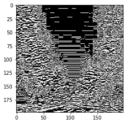
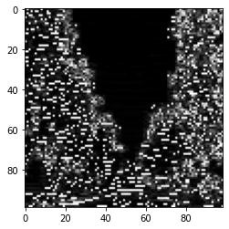

CNN Convolution and Pooling
Posted on March 23, 2021
1 Imports
from pathlib import Pathimport pandas as pd
import numpy as np
import matplotlib.pyplot as pltimport torch
print("Using torch", torch.__version__)
device = torch.device("cuda") if torch.cuda.is_available() else torch.device("cpu")
from torchvision import transformsfrom PIL import Image
trans_GreyScale = transforms.Compose([
transforms.Grayscale()
])
imgRaw = Image.open("sample.png")
img = trans_GreyScale(imgRaw)from torchvision import datasets
dataset = datasets.MNIST(root=Path.cwd(), download=True)
img, label = dataset[10]plt.imshow(img,cmap='gray')2 Kernel(Filter) Convolution
2.1 Kernel(Filter) matrix
kernel = torch.tensor([[[[ -1, -1, -1],
[ 2, 2, 2],
[ -1, -1, -1]]]],dtype=torch.float)2.2 Image to Tensor
trans_Img2Tensor = transforms.Compose([
transforms.ToTensor()
])
demo = trans_Img2Tensor(img)2.3 Convolve
convImg_tensor = torch.nn.functional.conv2d(demo,kernel,stride=1,padding=0)2.4 Tensor to Image
trans_Tensor2Img = transforms.Compose([
transforms.ToPILImage()
])
newImg = trans_Tensor2Img(convImg_tensor)plt.imshow(newImg,cmap='gray')
3 Pooling
poolImg_tensor = torch.nn.functional.max_pool2d(convImg_tensor,kernel_size=2)
newpoolImg = trans_Tensor2Img(poolImg_tensor)plt.imshow(newpoolImg,cmap='gray')
4 MultiChannel Convolution
kernel3 = torch.tensor([[[[ -1, -1, -1],
[ 2, 2, 2],
[ -1, -1, -1]],
[[ -1, -1, -1],
[ 2, 2, 2],
[ -1, -1, -1]],
[[ -1, -1, -1],
[ 2, 2, 2],
[ -1, -1, -1]]]]
,dtype=torch.float)
#ideally if you built the tensor correctly above, the below reshaping should do nothing
kernel3c = torch.reshape(kernel3,(1,3,3,3))
# Shape = (Num of Samples,Channels,Height,Width) = (1,3,3,3);
demo = trans_Img2Tensor(imgRaw)
convImg_tensor = torch.nn.functional.conv2d(demo,kernel3c)
Img3c = trans_Tensor2Img(convImg_tensor)- Take notice that the output is a single channel AKA Black&White image.
- This is how it should be and how convolution works
- Multi-channel convolution collapses the 3 channels into 1 channel.
TFjs
- vertical filter
const kernFilter = tf.tensor4d([-1,-1,-1,2,2,2,-1,-1,-1, -1,-1,-1,2,2,2,-1,-1,-1, -1,-1,-1,2,2,2,-1,-1,-1],[3,3,3,1],"float32")
#gets converted into
const kernFilter = tf.tensor4d([[[[-1],[-1],[-1]],
[[2],[2],[2]],
[[-1],[-1],[-1]]],
[[[-1],[-1 ],[-1]],
[[2],[2 ],[2]],
[[-1],[-1 ],[-1]]],
[[[-1],[-1],[-1]],
[[2],[2],[2]],
[[-1],[-1],[-1]]]])